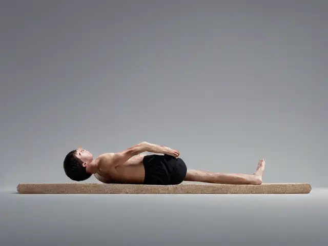
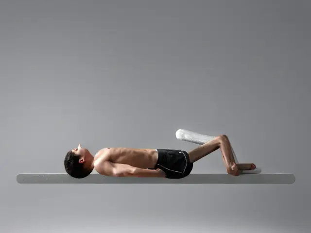
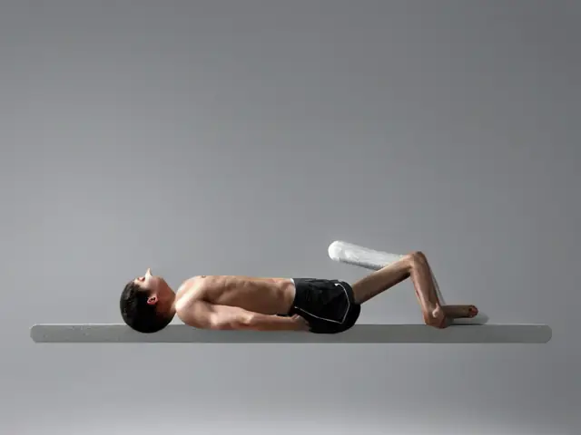
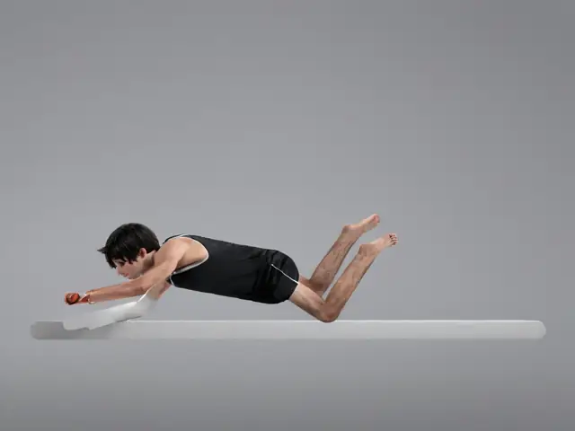
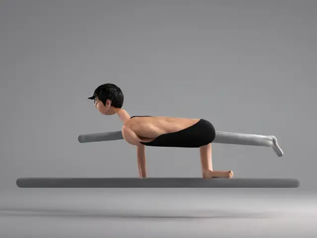

<!doctype html><meta charset=utf-8><title>Варианты анимации</title><style>body{font:15px/1.4 -apple-system,sans-serif;background:#111;color:#eee;margin:0;padding:16px}h2{font-size:15px;color:#9ab}.row{display:flex;gap:12px;flex-wrap:wrap}figure{margin:0}img{width:300px;border-radius:10px;background:#eff2f5;display:block}figcaption{text-align:center;color:#8a9;font-size:13px;padding:4px}</style><section><h2>knee-slr</h2><div class=row><figure><figcaption>cur</figcaption></figure><figure><figcaption>fade6</figcaption></figure><figure><figcaption>fade2</figcaption></figure></div></section><section><h2>lum-glute-bridge</h2><div class=row><figure><figcaption>cur</figcaption></figure><figure><figcaption>fade6</figcaption></figure><figure><figcaption>fade2</figcaption></figure></div></section><section><h2>thor-open-book</h2><div class=row><figure><figcaption>cur</figcaption></figure><figure><figcaption>fade6</figcaption></figure><figure><figcaption>fade2</figcaption></figure></div></section><section><h2>lum-bird-dog</h2><div class=row><figure><figcaption>cur</figcaption></figure><figure><figcaption>fade6</figcaption></figure><figure><figcaption>fade2</figcaption></figure></div></section>